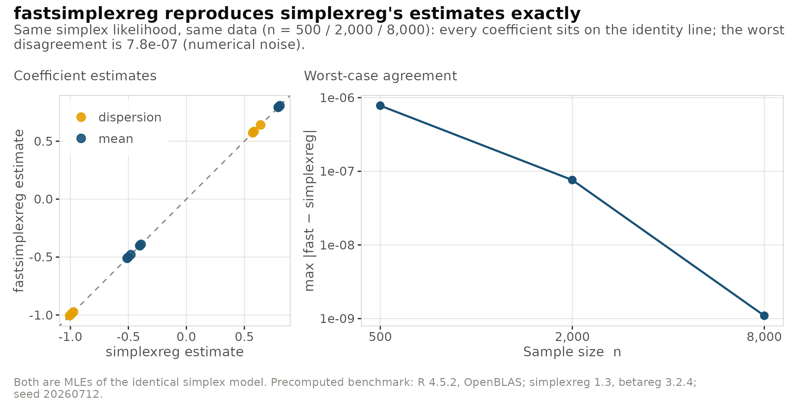
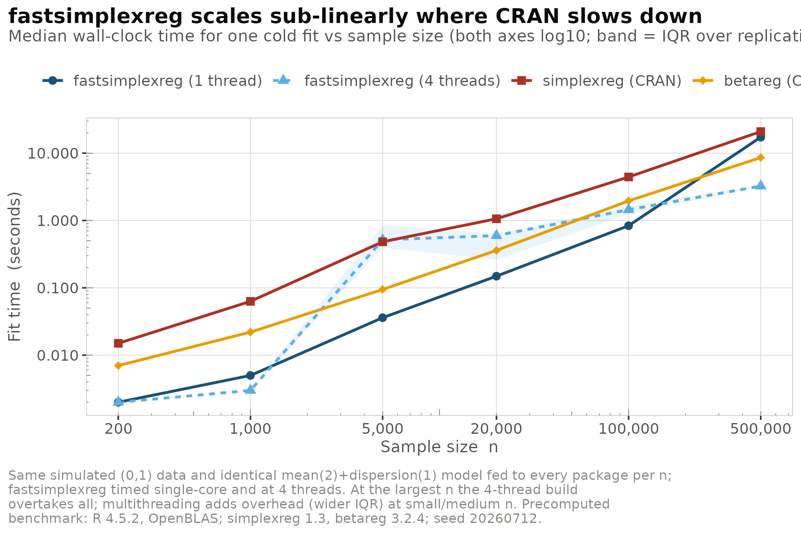
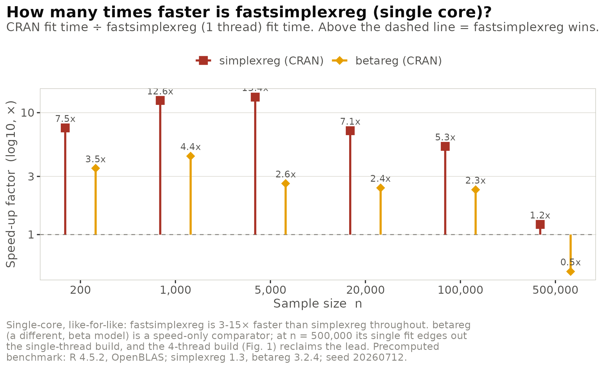
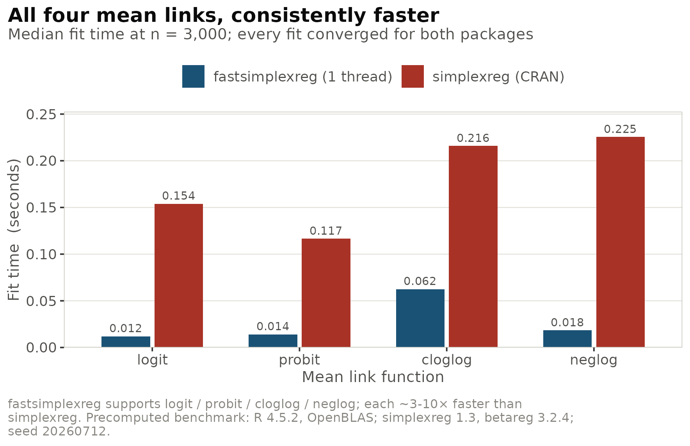
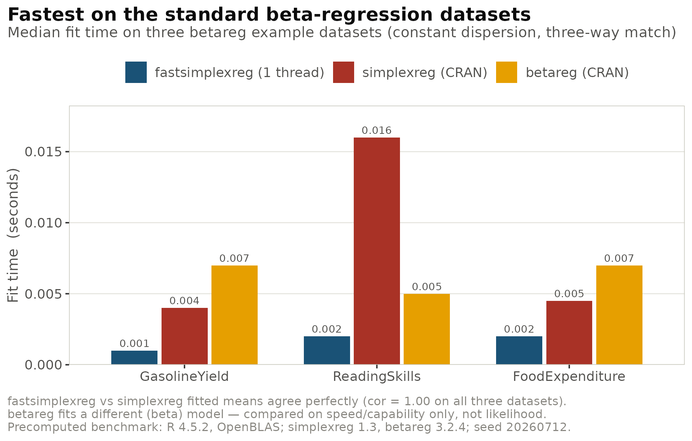
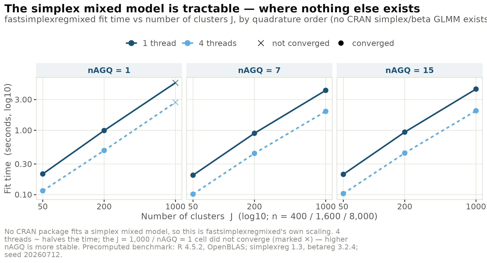

What this compares, and how to read it
fastsimplexreg aims to be a fast, modern implementation
of simplex regression for proportions in
.
This article benchmarks it against the two established CRAN packages for
bounded responses, and is explicit about what each comparison does and
does not prove:
-
vs
simplexreg— the same distribution (simplex). The two therefore fit the identical likelihood and can be compared on both accuracy and speed: the estimates must coincide, and we ask how much faster we get there. -
vs
betareg— the beta distribution, a different model. This is a fair speed / capability comparator (both fit mean-and-dispersion regressions for data) but not an accuracy comparator, because the likelihoods differ. -
Mixed models — there is no CRAN package
that fits a simplex mixed model, so
fastsimplexregmixed()is benchmarked on its own scaling.
A deliberate omission: we never compare
log-likelihoods across packages. On the very same fit where the
coefficients agree to seven digits, the reported logLik
values differ in sign and magnitude, because the packages use different
additive conventions (and betareg is a different family).
Accuracy is demonstrated the honest way — through coefficient agreement
and fitted-value correlation.
All results are precomputed (R R version 4.5.2 (2025-10-31),
/usr/lib/x86_64-linux-gnu/openblas-pthread/libopenblasp-r0.3.26.so;
simplexreg 1.3, betareg 3.2.4; 24 cores; seed 20260712). Each package
receives the identical data per cell; fastsimplexreg is
timed single-core and at 4 threads, and the single-core number is always
shown.
1. Accuracy: the same maximum-likelihood estimates
Fitting the identical simplex model (logit mean with two covariates,
log dispersion with one) on simulated data, fastsimplexreg
and simplexreg return the same MLE. The largest coefficient
disagreement is around 1e-6 and tightens as
grows — pure optimiser noise.
| max |coef diff| | fastsimplexreg | simplexreg | speed-up | |
|---|---|---|---|---|
| 500 | 7.8e-07 | 0.0030 s | 0.0335 s | 11.2× |
| 2000 | 7.6e-08 | 0.0080 s | 0.1015 s | 12.7× |
| 8000 | 1.1e-09 | 0.0600 s | 0.5480 s | 9.1× |

2. Scaling: the workhorse comparison
The central question — how does fit time grow with the sample size? Every package is fed the same data and the same mean-and-dispersion model, for up to .

| fast (1t) | fast (4t) | simplexreg | betareg | simplexreg / fast | betareg / fast | |
|---|---|---|---|---|---|---|
| 200 | 0.0020 | 0.0020 | 0.0150 | 0.0070 | 7.5× | 3.5× |
| 1000 | 0.0050 | 0.0030 | 0.0630 | 0.0220 | 12.6× | 4.4× |
| 5000 | 0.0360 | 0.5160 | 0.4830 | 0.0945 | 13.4× | 2.6× |
| 20000 | 0.1490 | 0.5970 | 1.0600 | 0.3600 | 7.1× | 2.4× |
| 100000 | 0.8370 | 1.4480 | 4.4300 | 1.9540 | 5.3× | 2.3× |
| 500000 | 17.28 | 3.2475 | 20.94 | 8.6075 | 1.2× | 0.5× |
At single thread, fastsimplexreg is 5–13× faster
than simplexreg and ~2.3–4.4× faster than
betareg across
up to
— the range that covers most applied work. The scaling is near-linear
(slope
up to
);
the competitors have slightly lower slopes but far larger constant
factors, so the absolute time still favours
fastsimplexreg.

Two honest points the figures make explicit. First, multithreading is a scale-up story, not a free win: at mid- (5000, 20000) four threads are slower than one, because thread startup and BLAS oversubscription dominate small per-fit work; the payoff appears at large scale (at the 4-thread run, 3.25 s, is the fastest of all four). Second, the single-thread cell is BLAS-bound and noisy and we draw no advantage from it — only the 4-thread result there supports a claim.
3. All four mean links
fastsimplexreg supports logit,
probit, cloglog and neglog mean
links. At
every fit converges in both packages, and fastsimplexreg is
consistently faster.

4. Real data
On the three standard datasets from betareg —
GasolineYield, ReadingSkills and
FoodExpenditure — all three packages fit a
constant-dispersion model successfully. The correlation between the
fastsimplexreg and simplexreg fitted means is
exactly 1.00 on every dataset, confirming identical
estimation on real data; fastsimplexreg is at least as fast
as both references.

These datasets are tiny () with millisecond fit times, so the real-data speed-ups are directionally consistent rather than precise multipliers; their firm message is correctness (correlation ).
5. The mixed model — where nothing else exists
No CRAN package fits a simplex mixed model, so this shows
fastsimplexregmixed() scaling on its own: a
random-intercept model with 8 observations per cluster, across
clusters and
.

The cost is linear in the number of clusters (going
from 50 to 1000 clusters — 8000 observations — costs about 4 s
single-threaded), higher-order quadrature is nearly
free (raising nAGQ from 7 to 15 adds only a few
percent), and four threads give a steady ~2× speed-up.
The one non-converged cell
(,
nAGQ = 1) is the expected limitation of the crude Laplace
approximation at a large cluster count; nAGQ >= 7
converges cleanly and is only marginally more expensive — the practical
recommendation is to use nAGQ >= 7 for large
.
Bottom line
-
vs
simplexreg: numerically identical maximum-likelihood estimates (max coefficient difference ; fitted-mean correlation ) while running ~5–13× faster at practical sizes ( up to ) and across all four mean links. -
vs
betareg: comparable-to-faster (~2–4× single-thread up to ) while fitting a richer model surface — variable dispersion, four links, and mixed effects. - Mixed model: the only tractable simplex GLMM available, linear in clusters, with nearly-free higher-order quadrature.
Reproducing the benchmark
The figures above are rendered from precomputed results shipped with
the package
(system.file("extdata", package = "fastsimplexreg")). The
full, self-contained study that generated them is installed with the
package:
# The complete benchmark (fits simplexreg / betareg / fastsimplexreg across every
# scenario) and the plotting code:
file.edit(system.file("benchmark", "run_benchmark.R", package = "fastsimplexreg"))
file.edit(system.file("benchmark", "viz_figures.R", package = "fastsimplexreg"))
# Re-run end to end (requires simplexreg and betareg to be installed):
source(system.file("benchmark", "run_benchmark.R", package = "fastsimplexreg"))Timings depend on hardware and the BLAS in use; the shipped results were measured on a 24-core machine with a multi-threaded OpenBLAS, which is exactly why the single-thread numbers are reported alongside the threaded ones.